Macroeconomic dashboard
A FastAPI macroeconomic dashboard with thirty-eight series from five public sources stored in DuckDB, crossed with the archive of already classified news. Each derived series is validated against the official series, and the per-theme synthesis quotes only numbers computed by the database.
- 38macroeconomic series across five themes
- 5public sources, SGS, IBGE, FRED, CONAB and MAPA
- 6idempotent stages, each runnable on its own
- 0.005percentage points of maximum difference when rebuilding 12-month IPCA
Ingestion and validation
INGESTION

SYNTHESIS

The series cover prices, credit, the external sector, activity and public accounts. Derivations are computed at ingestion, such as the 12-month accumulation, the year-on-year change and the rolling sum, and each one is checked against the published official series whenever one exists. The 12-month IPCA rebuilt from the monthly series stays within about 0.005 percentage points of the official figure over 135 months, and the same check applies to IGP-M, INCC and IPA.
The pipeline has six idempotent stages, each runnable on its own, and the FastAPI and Jinja2 dashboard never triggers collection, it only reads what the pipeline stored, which keeps the page fast and the cost predictable.
Per-theme synthesis
Statistics are computed in DuckDB and handed ready to the model, which narrates each indicator's level, direction and period in focus without doing arithmetic. Every statement in the text carries the value and date it came from, traceable to the series and the period, and each indicator's chart accompanies the reading.
Each theme's synthesis crosses that reading with the classified news on the same subject. Since each figure is usually released weeks after the period it refers to and the news comments on it on release day, the join uses the series reference period and last-month and last-week windows over the publication date, so each number appears next to the news that actually discusses it.
Python · DuckDB · FastAPI · Jinja2 · Groq · Docker